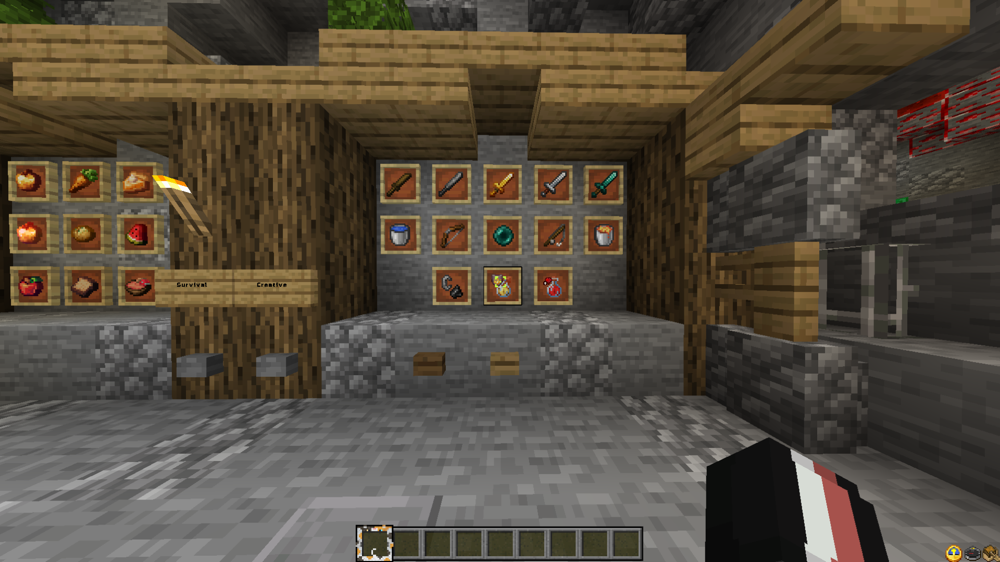
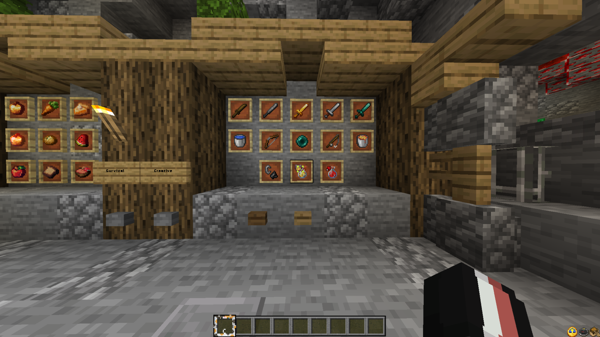
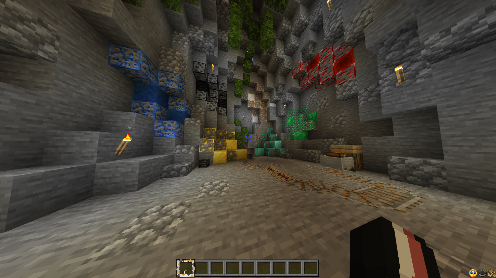
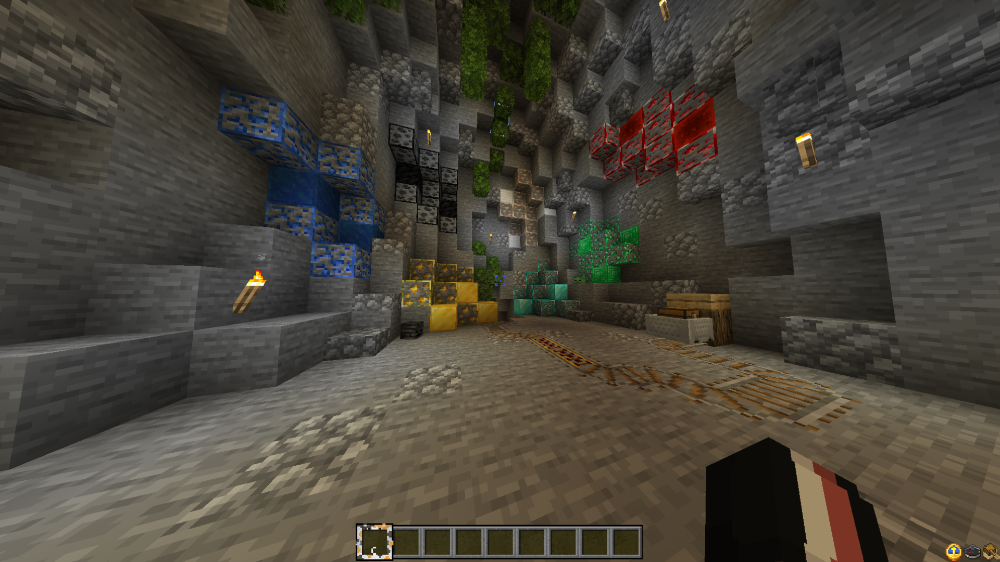
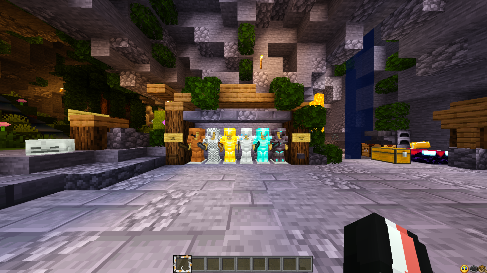
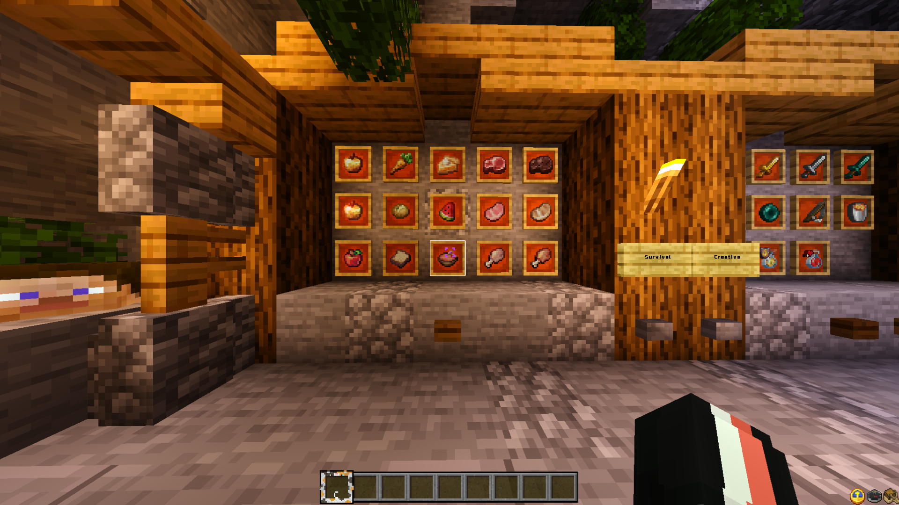
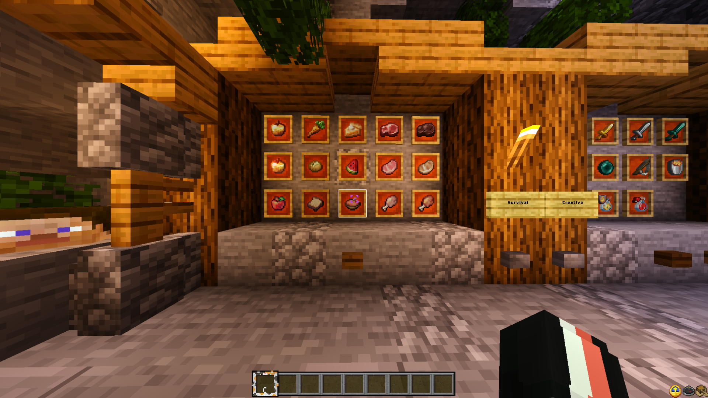
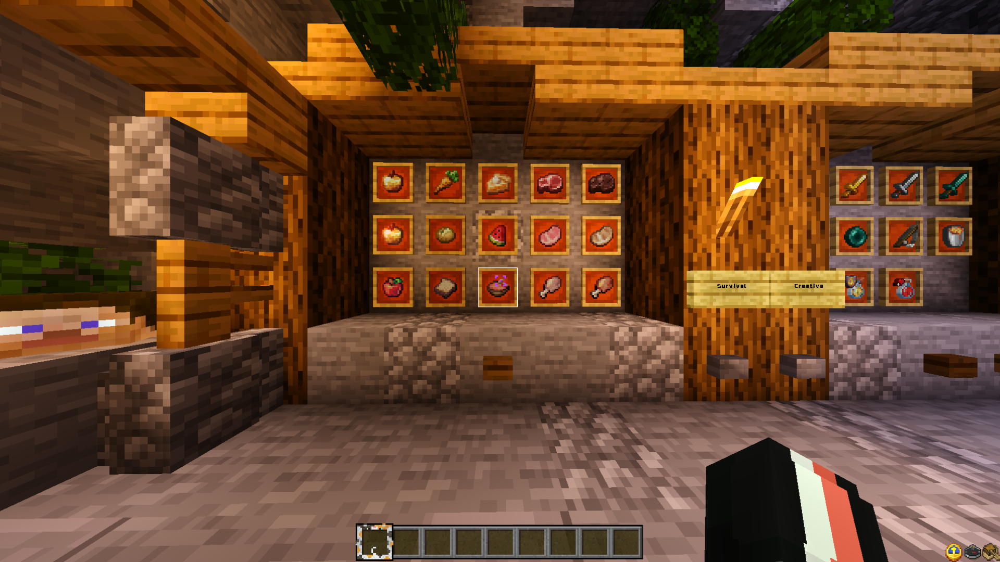

Información
Esta Textura es un Nuevo Cliente Sencillo pero que Agrega Muchas Cosas para que sea Mas Facil,
Tambien Agrega Muchas Cosas pero se Sigue Conservando la Experiencia Vanilla.
Caracteristicas:
- Fuente de Texto Personalizada
- Ver Saturacion de Comida
- Pinturas Nuevas
- Sonidos Cambiados
- Guia de Pociones
- Hotbar de Gato
- Nuevos Iconos de Pociones
- Fases de Destruccion Cambiadas
- Sol y Luna Realistas
- Diferenciar Bloques Infestados
- Bloques de Tierra Simples
- Efecto Encantamiento RGB
- CalabazaTtransparente
- Ver Tradeos
- Crafteo Rapido
- Huevos de Spawn Cambiados
- Creeper y Allay, Maid
- Gatos Gordos
- Ver Arenas Sospechosas
- Redstone limpia
- Ver Estado de Yunque
- Fuego Reducido
- Minerales Bordeados
- Diferenciar Tallo de Melon y Calabaza
- Ver Cultivos Listos
- Ver Efectos de Flechas y Pociones
- Ver Fases del Arco y Ballesta
- Diferenciar Discos
- Mejor Comida
- Variantes de Conejos
- Nuevas Animaciones e Interfaces
- Ver Durabilidad
- Ver Brujula, Compass y Brujula de Recuperacion
- Ver Mano Izquierda
- Ver Vida de Otros Jugadores (Solo Jugadores, no Otras Entidades)
- Escudo Pequeño
- Armor Hud
- Nueva Skin de Tanuki para Panda
- Mejores Arboles
- Shaders
 

 


Version sin Shaders
Esta el la Version sin Shaders para Dispositivos con Menos Potencia.

 



